전기산업기사 (2005-03-06 기출문제)
1과목: 전기자기학
1. 한 개의 전자가 반지름 r[m]인 원궤도 상에 v[m/s]로 운동하고 있다. 자기 모멘트는 몇[Wbㆍm] 인가?
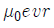
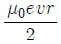
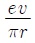
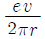
(정답률: 31%)

2. 1[cm] 마다 권수가 50회인 무한히 긴 솔레노이드에 10[mA]의 전류를 흘렀다. 이 때 그 내부의 자계의 세기는 몇[AT/m] 인가?
- 10
- 20
- 40
- 50
(정답률: 62%)
3. 종류가 다른 두 유전체 경계면에 전하 분포가 없을 때 경계면에서 정전계가 만족하는 것은?
- 전계의 법선성분이 같다.
- 전속밀도의 접선성분이 같다.
- 전속선은 유전률이 큰 곳으로 모인다.
- 경계면상의 두 점간의 전위차가 다르다.
(정답률: 64%)
4. 정전용량이 일정한 정전콘덴서에 축적 되는 에너지와 전위의 관계식을 그림으로 나타내면 무엇이 되는가?
- 원
- 타원
- 쌍곡선
- 포물선
(정답률: 58%)
5. 한변의 길이가 l[m]되는 정사각형 도체 회로에 전류 I[A]를 흘릴 때, 회로의 중심점의 자계의 세기는 몇 [AT/m] 인가?
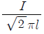
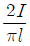
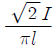
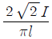
(정답률: 53%)
6. 진공 중에서 1[μF]의 정전용량을 갖는 구(球)의 반지름은 몇 [km] 인가?
- 0.9
- 9
- 90
- 900
(정답률: 70%)
7. 진공 중에서 전하밀도 ±σ[C/m2]의 무한평면이 간격 d[m]로 떨어져 있다. +σ의 평면으로부터 r[m] 떨어진 점 P의 전계의 세기는 몇 [N/C] 인가?
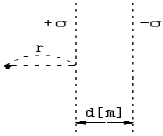
- 0
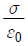
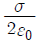
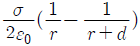
(정답률: 46%)
8. 도전률이 5.8×107[Ω/m]이고, 길이가 1[km]이며, 단면적이 1.309×10-6[m2]인 물체가 갖는 저항값은 약 몇 [Ω] 인가?
- 7.64
- 13.2
- 21.2
- 32.4
(정답률: 65%)
9. Poisson의 방정식은?
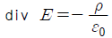
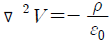
- E=grad V
- div E=ε0
(정답률: 63%)
10. 손실 전송선로에서 특성 임피던스는 여러가지 요소에 의존한다. 다음 중 의존하지 않는 것은 어떤 것인가?
- 선로의 길이
- 도선의 도전률
- 선로의 동작 주파수
- 두 도선간 유전체의 유전률
(정답률: 54%)
11. 표면 전하밀도 ± σ[C/m2]으로 대전된 도체 내부의 전속밀도는 몇 [C/m2]인가?
- σ
- ε0E
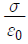
- 0
(정답률: 42%)
12. W1, W2의 에너지를 갖는 두 콘덴서를 병렬로 연결하였을 경우 총 에너지 W에 대한 관계식으로 옳은 것은?(오류 신고가 접수된 문제입니다. 반드시 정답과 해설을 확인하시기 바랍니다.)
- W1 +W2＞W
- W1 +W2＜W
- W1 +W2= W
- W1 -W2 = W
(정답률: 46%)
13. 공극을 가진 환상 솔레노이드에서 총권수 N , 철심의 비투자율 μγ, 단면적 A, 길이 ℓ 이고 공극이 δ 일 때, 공극부에 자속밀도를 B를 얻기 위해서는 얼마만한 전류를 흘려야 하는가?
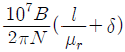
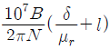
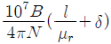
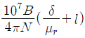
(정답률: 59%)
14. 물질의 자화현상과 관계가 가장 깊은 것은?
- 전자의 이동
- 전자의 자전
- 분자의 공전
- 전자의 공전
(정답률: 51%)
15. 자유공간에서 완전 유전체, 손실 유전체 및 양도체를 결정해 주는 가장 중요한 인자는 다음 중 무엇인가?
- 도전률, 유전률 및 투자율이다.
- 감쇄정수이다.
- 반사계수이다.
- 유전손실 정접이다.
(정답률: 21%)
16. 그림과 같은 유전속 분포에서 ε1과 ε2 사이의 관계는?
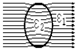
- ε1=ε2
- ε1＞ε2
- ε1＜ε2
- ε1=ε2=0
(정답률: 64%)
17. 투자율이 다른 두 자성체의 경계면에서의 굴절각은?
- 투자율에 비례한다.
- 투자율에 반비례한다.
- 자속에 비례한다.
- 투자율에 관계없이 일정하다.
(정답률: 52%)
18. 판자석의 세기가 P[Wb/m]되는 판자석을 보는 입체각이 ω인 점의 자위는 몇 [A]인가?
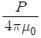
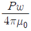
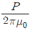
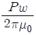
(정답률: 65%)
19. 무한히 긴 직선 도체에 선전하 밀도 +ρ[C/m]로 전하가 충전되어 있을 때 이 직선 도체에서 r[m]만큼 떨어진 점의 전위는?
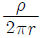
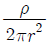
- ∞
- 0
(정답률: 22%)
20. 평균 반지름이 a[m]이고 단면적이 S[m2]인 원환철심(투자율 μ)에 권선수 N인 코일을 감았을 때, 자기인덕턴스는 몇 H 가 되는가?(오류 신고가 접수된 문제입니다. 반드시 정답과 해설을 확인하시기 바랍니다.)
- αμN2S
- 2παμN2S
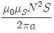
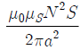
(정답률: 23%)
2과목: 전력공학
21. 터빈 발전기의 과속도시의 보호를 위해 비상조속기를 설치한다. 정격속도의 몇 [%] 정도에서 동작하도록 조정되어 있는가?
- 5± 1
- 10± 1
- 20± 1
- 25± 1
(정답률: 47%)
22. 전송전력이 400[MW], 송전거리가 200[km]인 경우의 경제적인송전전압은 약 몇[kV] 인가? (단, Still의 식에 의하여 산정한다.)
- 57
- 173
- 353
- 645
(정답률: 57%)
23. 진상전류만이 아니라 지상전류도 잡아서 광범위하게 연속적인 전압 조정을 할 수 있는 것은?
- 전력용콘덴서
- 동기조상기
- 분로리액터
- 직렬리액터
(정답률: 60%)
24. 다음 중 지락전류의 크기가 최소인 중성점 접지방식은?
- 비접지방식
- 소호리액터접지방식
- 직접접지방식
- 고저항접지방식
(정답률: 64%)
25. 송전선에 댐퍼(damper)를 다는 이유는?
- 전선의 진동방지
- 전자유도 감소
- 코로나의 방지
- 현수애자의 경사 방지
(정답률: 78%)
26. 애자가 갖추어야 할 구비 조건으로 옳은 것은?
- 온도의 급변에 잘 견디고 습기도 잘 흡수해야 한다.
- 지지물에 전선을 지지할 수 있는 충분한 기계적 강도를 갖추어야 한다.
- 비, 눈, 안개 등에 대해서도 충분한 절연저항을 가지며 누설전류가 많아야 한다.
- 선로 전압에는 충분한 절연 내력을 가지며, 이상 전압에는 절연 내력이 매우 적어야 한다.
(정답률: 63%)
27. 정격전압 7.2[kV]인 3상용 차단기의 차단용량이 100[MVA]라면 정격차단전류는 약 몇 [kA] 인가?
- 2
- 4
- 8
- 12
(정답률: 55%)
28. 차단기와 차단기의 소호매질이 틀리게 연결된 것은?
- 공기차단기 - 압축공기
- 가스차단기 - SF6
- 자기차단기 - 진공
- 유입차단기 - 절연유
(정답률: 74%)
29. 지중 케이블에서 고장점을 찾는 방법이 아닌 것은?
- 머리 루프(Murray loop)시험기에 의한 방법
- 메거(Megger)에 의한 측정 방법
- 수색 코일(Search coil)에 의한 방법
- 펄스에 의한 측정법
(정답률: 71%)
30. 역율 0.8(지상)인 부하 480[kW]를 공급하는 곳에 콘덴서220[kVA]를 설치하면 역률은 몇 [%]로 개선되는가?
- 82
- 85
- 90
- 96
(정답률: 51%)
31. 다음 중 특유속도가 가장 작은 수차는?
- 프로펠러수차
- 프란시스수차
- 펠턴수차
- 카플란수차
(정답률: 56%)
32. 복도체에 대한 설명 중 옳지 않은 것은?
- 같은 단면적의 단도체에 비하여 인덕턴스는 감소하고 정전용량은 증가한다.
- 코로나 개시전압이 높고, 코로나 손실이 적다.
- 단락시 등의 대전류가 흐를 때, 소도체간에 반발력이 생긴다.
- 같은 전류용량에 대하여 단도체보다 단면적을 적게 할수 있다.
(정답률: 37%)
33. 전선로에서 연가를 하는 목적이 아닌 것은?
- 직렬 공진의 방지
- 직격뢰의 방지
- 선로정수의 평형
- 유도장해의 방지
(정답률: 55%)
34. 루프(loop)배전의 이점은?
- 전선이 경제적이다.
- 증설이 용이하다.
- 농촌에 적당하다.
- 전압변동이 적다.
(정답률: 40%)
35. 송전계통에서 안정도 증진과 관계없는 것은?
- 고속 재폐로 방식 채용
- 계통의 전달 리액턴스 감소
- 계통의 전압 변동의 제어
- 차폐선의 채용
(정답률: 40%)
36. 시설용량 500[kW], 부등률 1.25, 수용률 80[%]일 때 합성 최대 전력은 약 몇 [kW]인가?
- 320
- 400
- 500
- 720
(정답률: 56%)
37. 송전선로의 보호방식으로 지락에 대한 보호는 영상전류를 이용하여 어떤 계전기를 동작 시키는가?
- 차동계전기
- 전류계전기
- 방향계전기
- 접지계전기
(정답률: 48%)
38. 단상3선식 110/220V에 대한 설명으로 옳은 것은?
- 전압 불평형이 우려되므로 콘덴서를 설치한다.
- 중성선과 외선사이에만 부하를 사용하여야 한다.
- 중성선에는 반드시 퓨즈를 끼워야 한다.
- 2종의 전압을 얻을 수 있고 전선량이 절약되는 이점이 있다.
(정답률: 46%)
39. 장거리 송전선로의 특성은 무슨 회로로 다루어야 하는가?
- 분포정수회로
- 분산부하회로
- 집중정수회로
- 특성 임피던스회로
(정답률: 67%)
40. "화력발전소의 ㉠은 발생 ㉡을 열량으로 환산한 값과 이것을 발생하기 위하여 소비된㉢의 보유열량 ㉣를 말한다". 빈칸 ㉠∼㉣에 알맞은 말은?
- ㉠ 손실율 ㉡ 발열량 ㉢ 물 ㉣ 차
- ㉠ 발전량 ㉡ 증기량 ㉢ 연료 ㉣ 결과
- ㉠ 열효율 ㉡ 전력량 ㉢ 연료 ㉣ 비
- ㉠ 연료소비율 ㉡ 증기량 ㉢ 물 ㉣ 화
(정답률: 70%)
3과목: 전기기기
41. 변압기 기름의 열화 영향에 속하지 않는 것은?
- 침식 작용
- 절연 내력의 저하
- 냉각 효과의 감소
- 공기중 수분의 흡수
(정답률: 50%)
42. 변압기에서 2차를 1차로 환산한 등가 회로의 부하 소비전력 P2 [W]는, 실제의 부하의 소비전력 P2 [W]에 대하여 어떠한가? (단,a는 변압기이다.)
- a배
- α2배
- 1/a배
- 변함없다.
(정답률: 30%)
43. 전기기계에 있어서 히스테리시스손 (hysteresis loss)을 감소시키기 위하여 어떻게 하는 것이 좋은가?
- 성층철심
- 규소강판 사용
- 보극 설치
- 보상권선 설치
(정답률: 67%)
44. 다이오드를 사용한 단상전파정류회로에서 100[A]의 직류를 얻으려고 한다. 이 때 정류기의 교류측 전류 [A]는?
- 111
- 167
- 222
- 278
(정답률: 50%)
45. 무부하로 병렬 운전하는 동일 정격의 2대의 3상 동기발전기에 대응하는 두 기전력 사이에 30°의 위상차가 있을 때 한 발전기에서 다른 발전기에 공급되는 전력은 1상의 유효전력은 몇 [kW]인가? (단, 각 발전기의(1상의) 기전력은 1000[V], 동기 리액턴스는 4[Ω]이고, 전기자 저항은 무시한다. )
- 62.5
- 125.5
- 152.5
- 20.8
(정답률: 50%)
46. 4극, 60[Hz]의 3상 유도전동기를 입력 100[kW], 효율90[%]로 정격 운전할 때의 토크 [kgㆍm]는 약 얼마인가? (단, 슬립은 2[%] 이다.)
- 46
- 49
- 97
- 146
(정답률: 41%)
47. 정격 전압 525[V], 전기자 전류 50[A]에서 1500[rpm]으로 회전하는 직류 직권 전동기의 공급 전압을 400[V]로 감소하고, 전기자 전류는 동일하게 유지하면 회전수는 몇 [rpm]이 되는가? (단, 전기자 권선 및 계자 권선의 저항은 0.5[Ω]이라 한다)
- 1125
- 1175
- 1200
- 1250
(정답률: 35%)
48. 동기기의 전기자 권선법이 아닌 것은?
- 분포권
- 전절권
- 2층권
- 중권
(정답률: 55%)
49. 농형 유도전동기에 대해서 기동전류가 큰 순서로 나열한 경우 옳은 것은?
- 보통농형 → 디프슬롯농형 → 2중농형
- 보통농형 → 2중농형 → 디프슬롯농형
- 디프슬롯농형 → 2중농형 →보통농형
- 2중농형 → 디프슬롯농형 →보통농형
(정답률: 36%)
50. 임피던스 강하가 5[%]인 변압기가 운전 중 단락되었을 때 단락 전류는 정격 전류의 몇 배인가?
- 10
- 15
- 20
- 25
(정답률: 60%)
51. 3상 동기기의 제동권선의 효용은?
- 출력증가
- 효율증가
- 역률개선
- 난조방지
(정답률: 69%)
52. 3상 변압기의 병렬 운전 조건에 맞지 않는 것은?
- 1차, 2차의 정격 전압 및 극성이 같을 것
- % 저항 강하 및 리액턴스 강하가 같을 것
- 각군의 임피던스가 용량에 비례할 것
- 상회전 방향과 각 변위가 같을 것
(정답률: 39%)
53. 3상 유도전동기의 원선도를 그리는데 옳지 않은 시험은?
- 저항측정
- 무부하 시험
- 구속시험
- 슬립측정
(정답률: 69%)
54. 단자 전압 220[V],부하 전류 50[A]인 분권 발전기의 유기기전력[V]은? (단, 전기자 저항 0.2[Ω],계자 전류 및 전기자 반작용은 무시한다)
- 210
- 225
- 230
- 250
(정답률: 59%)
55. 4극 7.5[kW], 200[V], 60[Hz]의 3상 유도전동기가 있다. 전부하에서 2차 입력이 7950[W]이다. 이 경우의 2차 효율은 약 몇 [%]인가? (단, 여기서 기계손은 130[W]이다.)
- 92
- 94
- 96
- 98
(정답률: 53%)
56. 자동화 설비 등에서 위치 결정 기구에 사용되는 것은?
- 반동전동기
- 전기 동력계
- 세이딩 모터
- 스테핑 모터
(정답률: 56%)
57. 3상 유도전동기의 특성 중 비례추이 할 수 없는 것은?
- 1차전류
- 2차전류
- 출력
- 토크
(정답률: 59%)
58. 극수 6, 회전수 1200[rpm]의 교류발전기와 병렬운전 하는 극수 8의 교류발전기의 회전수는 몇 [rpm] 이어야 하는가?
- 800
- 900
- 1⑤0
- 1100
(정답률: 67%)
59. 브러시를 이동하여 회전속도를 제어하는 전동기는?
- 단상 직권전동기
- 직류 직권전동기
- 반발 전동기
- 반발기동형 단상유도전동기
(정답률: 42%)
60. 포화하고 있지 않은 직류 발전기의 회전수가 1/2로 감소되었을 때 기전력을 전과 같은 값으로 하자면 여자를 속도변화 전에 비해 얼마로 해야 하는가?
- 1/2배
- 1배
- 2배
- 4배
(정답률: 61%)
4과목: 회로이론
61. T형 4단자 회로망에서 영상임피던스가 Z01=50[Ω],Z02=2[Ω] 이고, 전달정수가 0일 때 이 회로의 4단자정수 D 의 값은?
- 10
- 5
- 0.2
- 0.1
(정답률: 40%)
62. L-C 직렬회로에 직류 기전력 E를 t=0에서 갑자기 인가할때 C에 걸리는 최대 전압은?
- E
- 1.5E
- 2E
- 2.5E
(정답률: 31%)
63. 그림과 같은 L형 회로의 4단자정수는 어떻게 되는가?
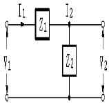
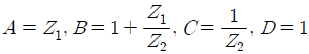
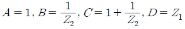
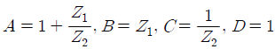
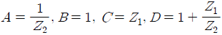
(정답률: 58%)
64. 그림과 같은 R 과 C의 병렬회로에서 C가 변화할 때의 임피던스 Z의 백터 궤적은 어떻게 되는가?
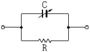
- 원점을 통하는 반원이 된다.
- 원점을 통하지 않는 반원이 된다.
- 원점을 통하는 직선이 된다.
- 원점을 통하지 않는 직선이 된다.
(정답률: 49%)
65. 기본파의 30[%]인 제3고조파와 40[%]인 제5고조파를 포함하는 전압파의 왜형률은?
- 0.2
- 0.4
- 0.5
- 0.7
(정답률: 64%)
66. 전원과 부하가 다같이 Δ결선된 3상 평형회로가 있다. 전원전압이 200[V], 부하 한상의 임피던스가 6+j8[Ω]인 경우 선전류[A]는?
- 20
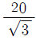
- 20√3
- 10√3
(정답률: 61%)
67. Va=3[V], VB =2-j3[V], VC=4+j3[V] 를 3상 불평형 전압이라고 할 때 영상 전압 [V]은?
- 3
- 9
- 27
- 0
(정답률: 52%)
68. 그림과 같은 파형의 교류전압 v 와 전류 i 간의 등가역률은? (단. v=Vm sinωt, i=Im(sinωt
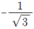
sin 3ωt)이다. )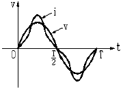
- √3/2
- 1/2
- 0.8
- 0.9
(정답률: 39%)
69. f(t)=5sin2t를 라플라스 변환하면?
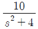
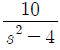
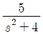
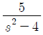
(정답률: 50%)
70. 반파 정류파의 파고율은?
- 2
- 1
- 3
- √2
(정답률: 47%)
71. 평형 3상 회로에서 임피던스를 Y결선에서 Δ결선으로 하면소비전력은 몇 배가 되는가?
- 3배
- 1/√3배
- √3배
- 1/3배
(정답률: 50%)
72. 그림과 같은 R-L 직렬회로에 t=0에서 스위치 S를 닫아 직류전압 100[V]를 회로 양단에 급히 가한 후 L/R[sec] 일때의 전류값 [A]은? (단, R = 10[Ω], L = 0.1[H]이다.)
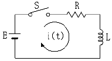
- 0.632
- 6.32
- 36.8
- 63.2
(정답률: 42%)
73. 다음 사항 중 옳게 표현된 것은?
- 비례요소의 전달함수는
 이다.
이다. - 미분요소의 전달함수는 K이다.
- 적분요소의 전달함수는 Ts
- 1차 지연요소의 전달함수는
 이다.
이다.
(정답률: 63%)
74.
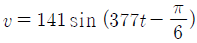
인 파형의 주파수는 몇[Hz]인가?- 50
- 60
- 100
- 377
(정답률: 70%)
75. 한상의 임피던스 Z=6+j8[Ω]인 평형 Y부하에 평형 3상전압 200[V]를 인가할 때 무효전력 [Var]은?
- 1330
- 1848
- 2381
- 3200
(정답률: 55%)
76. 그림과 같은 회로망의 전압전달함수 G(s)는? (단, S=jω이다.)(오류 신고가 접수된 문제입니다. 반드시 정답과 해설을 확인하시기 바랍니다.)
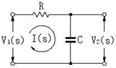
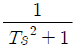
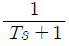
- Ts2+1
- Ts+1
(정답률: 41%)
77. 대칭 좌표법에서 사용되는 용어 중 각상에 공통인 성분을 표시하는 것은?
- 영상분
- 정상분
- 역상분
- 공통분
(정답률: 65%)
78. 그림에서 직류전압계를 그림과 같은 극성으로 연결할 때 전압계의 지시값 [V]는?
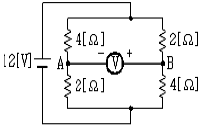
- 4
- -4
- 8
- -8
(정답률: 41%)
79.
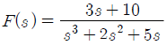
일때 f(t)의 최종값은?- 2
- 0
- 1
- 3
(정답률: 56%)
80. 어떤 회로의 전압 및 전류가 E=10∠ 60°[V], I=5∠ 30°[A]일 때 이 회로의 임피던스 Z[Ω] 는?
- √3+j
- √3-j
- 1+j√3
- 1-j√3
(정답률: 49%)
5과목: 전기설비기술기준 및 판단 기준
81. 방직공장의 구내 도로에 220[V] 조명등용 가공전선로를 시설하고자 한다. 전선로의 경간은 몇 [m] 이하이어야 하는가?
- 20
- 30
- 40
- 50
(정답률: 51%)
82. 철주가 강관에 의하여 구성되는 사각형의 것일 때 갑종 풍압하중을 계산하려 한다. 수직 투영면적 1[m2]에 대한 풍압하중을 몇 [Pa]로 기초하여 계산하는가?
- 588
- 882
- 1117
- 1412
(정답률: 35%)
83. 345[kV] 가공전선이 154[kV] 가공전선과 교차하는 경우 이들 양 전선 상호간의 이격거리는 몇 [m]이상인가?
- 4.48
- 4.96
- 5.48
- 5.82
(정답률: 40%)
84. 전동기 등에만 이르는 저압 옥내전로의 과전류차단기는 그 과전류차단기에 직접 접속하는 부하측의 전선의 허용전류가 40[A]인 경우 정격전류가 몇 [A] 이하인 것을 사용하여야 하는가?
- 50
- 60
- 100
- 125
(정답률: 27%)
85. 저압 옥내배선공사에 사용할 수 있는 연동선은 1.6[mm] 이상이어야 한다. 미네럴 인슈레이션 케이블을 사용한다면 몇 [mm2]이상의 것을 사용하여야 하는가?
- 0.75
- 1
- 1.2
- 1.25
(정답률: 34%)
86. 시가지 도로를 횡단하여 저압 가공전선을 시설하는 경우의지표상 높이는 몇 [m] 이상이어야 하는가?
- 5
- 5.5
- 6
- 6.5
(정답률: 25%)
87. 시가지의 도로상에 시설하는 가공 직류 전차선로를 구분하기 위하여 그 선로길이 2km 이하마다 무엇을 시설하여야 하는가?
- 개폐기
- 분기기
- 차단기
- 피뢰기
(정답률: 36%)
88. 가공전선로의 지지물에 지선을 시설할 때 옳은 방법은?
- 지선의 안전율을 2.0으로 하였다
- 소선은 최소 2가닥이상의 연선을 사용하였다.
- 지중의 부분 및 지표상 20[cm]까지의 부분은 아연도금 철봉 등 내부식성 재료를 사용하였다.
- 도로를 횡단하는 곳의 지선의 높이는 지표상 5[m]로 하였다.
(정답률: 53%)
89. 사용전압이 300[V]인 지중 케이블이 지중 약전류 전선과 접근 또는 교차할 때 상호간에 내화성의 격벽을 설치한다면 상호간의 이격거리는 몇 [cm] 이하인 경우인가?
- 30
- 50
- 60
- 100
(정답률: 39%)
90. 가요 전선관 공사에 사용할 수 없는 전선은?
- 인입용 비닐전선
- 옥외용 비닐절연전선
- 600[V] 비닐절연전선
- 600[V] 고무절연전선
(정답률: 57%)
91. 특별고압 가공전선로의 지지물로 사용하는 B종 철주, B종 철근콘크리트주 또는 철탑의 종류가 아닌 것은?
- 직선형
- 각도형
- 지지형
- 보강형
(정답률: 44%)
92. 전력계통의 운용에 관한 지시를 하는 곳은?
- 변전소
- 개폐소
- 발전소
- 급전소
(정답률: 47%)
93. 사무실 건물의 조명설비에 사용되는 백열전등 또는 방전등에 전기를 공급하는 옥내전로의 대지전압은 몇 [V] 이하이어야 하는가?
- 250
- 300
- 350
- 400
(정답률: 66%)
94. 접지공사를 생략할 수 없는 경우는?
- 사용전압이 직류 600[V]인 기계ㆍ기구를 습기가 있는 곳에 시설하는 경우
- 저압용의 기계ㆍ기구를 건조한 목재의 마루 위에서 취급하도록 시설하는 경우
- 철대 또는 외함의 주위에 적당한 절연대를 설치한 경우
- 외함이 없는 계기용 변성기가 고무ㆍ합성수지 기타의 절연물로 피복한 것일 경우
(정답률: 49%)
95. 애자사용공사에 의한 440[V]의 옥내배선을 점검할 수 없는 은폐장소에 시설하는 경우 전선과 조영재간의 이격거리는 몇 [cm] 이상이어야 하는가?
- 3.5
- 4.0
- 4.5
- 5.0
(정답률: 35%)
96. 건조한 장소로서 전개된 장소에 고압 옥내배선을 할 수 있는 공사방법은?
- 애자사용공사
- 금속관공사
- 합성수지관공사
- 덕트공사
(정답률: 55%)
97. 220[V] 전로에 시설하는 전동기 외함의 접지공사는?(관련 규정 개정전 문제로 여기서는 기존 정답인 3번을 누르면 정답 처리됩니다. 자세한 내용은 해설을 참고하세요.)
- 제1종
- 제2종
- 제3종
- 특별 제3종
(정답률: 49%)
98. 전력보안 통신용 전화설비를 시설하지 않아도 되는 것은?
- 원격감시제어가 되지 아니하는 발전소
- 원격감시제어가 되지 아니하는 변전소
- 2 이상의 급전소 상호간과 이들을 총합 운용하는 급전소간
- 발전소로서 전기 공급에 지장을 미치지 않고, 휴대용전력보안통신 전화설비에 의하여 연락이 확보된 경우
(정답률: 60%)
99. 사용전압이 400[V] 미만인 경우의 저압 보안공사에 전선으로 경동선을 사용할 경우 몇 [mm] 의 것을 사용하여야하는가?
- 1.2
- 2.6
- 3.5
- 4
(정답률: 26%)
100. 고압 및 특별고압 전로의 절연내력 시험을 하는 경우에는 시험전압을 연속하여 몇 분간 가하여 견디어야 하는가?
- 1
- 3
- 5
- 10
(정답률: 60%)